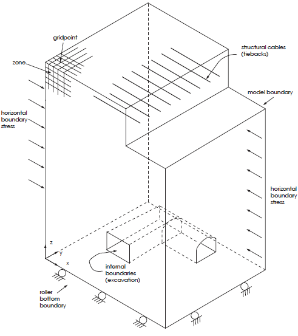

术语表
- 活动窗格（active pane）
- 在任意时刻，程序中总会有一个获得焦点的窗格（pane），称为活动窗格。文件菜单、工具栏和控制面板都会提供与活动窗格的窗格类型（pane type）相对应的选项。
- 别名（alias）
- 为绘图项或绘图项中的某个元素指定的替代名称。绘图项具有别名时，图例中标识该项的文字标签会使用别名，而不是该项的基本名称。
- 连接面（attached faces）
- 连接面是相互分离的子网格经连接或拼接后形成的网格面。连接面必须共面并相互接触，但各面上的网格点不必一一对应。网格单元疏密程度不同的子网格也可以连接。
- 显示属性（attribute）
- 显示属性（有时也称为“开关”）是一种控件，通过控制绘图项外观或显示方式的某个方面（例如透明度、颜色和大小）来影响绘图项的显示。在 PFC 中，每个绘图项都有一组控制其外观的属性。
- 位图（bitmap）
- 位图（更准确且更广义的名称为栅格图像）是由像素组成的矩形图像。位图文件有多种格式。PFC 可以生成便携式网络图形（PNG）和 Windows 位图（BMP）文件。可与矢量图对照理解。
- 边界条件（boundary condition）
- 边界条件是在模型边界上施加的约束或受控条件，例如力学问题中的指定位移或力、地下水流问题中的不透水边界，以及传热问题中的绝热边界等。
- 打包文件（bundle file）
- 打包文件由打包（Bundle）工具（）生成。它将项目文件（project file）、项目所跟踪的全部输入文件，以及从所有模型保存状态中提取的记录汇集起来。这是一种简单便捷的项目归档方式，也非常适合作为技术支持请求（technical support requests）的附件，因为它能够向技术支持人员提供重现所报告问题所需的全部资源。
- CALL 命令（CALL）
- CALL 是 PFC 的一条命令，可通过命令提示符或文件菜单使用，用于打开并执行 PFC 中的数据文件。
- 命令提示符（command prompt）
- 位于i 控制台（Console）窗格底部的部分，由提示符（PFC 中为
pfc>，FLAC3D 中为flac3d>）和用于输入命令的编辑框组成。 - 命令提示符（command prompt）
- 命令提示符用于在 PFC 中逐行输入命令，位于控制台窗格底部。PFC 对所输入命令的响应会显示在其上方的控制台窗格中。
- 控制台（console）
- 对i 控制台（Console）窗格的通称。该术语泛指任何基于文本的命令处理应用程序。Itasca 软件由命令驱动，因此具有控制台。程序文档有时会使用这一通称，例如“……在控制台中……”。
- 控制台窗格（Console (pane)）
- 控制台窗格包括命令提示符及其上方的显示区。处理提示符处输入的命令或数据文件中的命令时，PFC 的输出消息会出现在显示区中。与视图窗格和编辑器窗格不同，PFC 界面中只有一个控制台窗格。更多信息请参阅“概述——控制台”主题。
- 控制台窗格（Console pane）
- 该窗格分为两部分。底部是命令提示符（command prompt），用户可在此逐条输入命令。上部通常称为输出区、输出窗口或控制台输出区等，用于回显命令并显示命令处理产生的文字输出。选项对话框提供相关选项，用于指定显示哪些输出以及显示多少输出。
- 本构模型（constitutive model）
- 本构模型（也称材料模型）表示为 FLAC3D 模型中网格单元指定的变形和强度行为。FLAC3D 提供多种本构模型，用于模拟地质材料常见的不同类型行为。可以分别为 FLAC3D 模型中的每个网格单元指定本构模型和材料参数。
- 控制面板（Control Panel）
- 控制面板是一个窗格，包含操作视图的工具。这些工具按控件组组织。在 PFC 6.0 中，控制面板仅与视图窗格或拉伸窗格配合使用。
- 控件组（control set）
- 控制面板提供三个控件组。绘图项用于指定在视图窗格中显示的绘图项及其开关。视图信息显示鼠标指针当前位置对应的模型信息。视图控制提供模型视图的操作工具，例如缩放、旋转和局部放大等。可以分别开启或关闭控制面板中各控件组的显示。此外，各控件组还可细分为多个组件，这些组件可在控制面板中显示或最小化。
- 计算循环（cycle）
- 计算循环指完成一个时间步内全部计算所对应的模型时间单位，也可称为“计算步”。
- 数据文件（data file）
- 程序命令既可在命令提示符（command prompt）处交互输入，也可通过数据文件执行。数据文件是用户创建的格式化 ASCII 文件，其中包含描述待分析问题的一组命令。通常，创建数据文件是更高效的建模方法。程序通过 执行数据文件（
program call） 命令或菜单命令打开数据文件，并执行其中的命令。数据文件可使用任意文件名和扩展名，但建议使用统一的扩展名，例如“.dat”，以便与其他类型的文件区分。 - 数据文件（data file）
- 包含 PFC 命令的文本文件。一个数据文件可以通过 CALL 命令或 FISH 调用另一个数据文件，因此可将多个数据文件连接起来。有关编辑和执行数据文件的信息，请参阅“编辑器窗格”主题。
- 停靠（dock）
- “停靠”指将窗格或工具栏放置在界面内的固定位置。另见“浮动”。
- 动力求解（dynamic solution）
- 动力求解需要求解完整的动力运动方程，包括惯性项。动能的产生和耗散会直接影响求解结果。涉及高频、短时荷载的问题，例如地震或爆破荷载，需要进行动力求解。动力计算是 FLAC3D 的可选模块，参见动力分析（Dynamic Analysis）。
- 编辑器窗格（Editor (pane)）
- 编辑器窗格提供创建、编辑和校验数据文件的功能。每个编辑器窗格实例容纳一个文件，可以同时打开多个窗格实例，从而同时处理多个文件。任何文本文件都可以载入该窗格。更多信息请参阅“概述——编辑器”主题。
- 单元（element）
- 参见网格单元（zone）。
- 有限体积网格（finite volume grid）
- 有限体积网格由覆盖待分析物理区域的一个或多个有限体积单元组成。“网格”也可用英文 mesh 表示。有限差分网格还确定模型中全部状态变量的存储位置。在 FLAC3D 中，通常将所有矢量量，例如力、速度和位移，存储在网格点位置；将所有标量和张量量，例如应力和材料参数，存储在网格单元的形心位置。更多信息请参阅拉格朗日有限体积网格（The Lagrangian Finite Volume Grid）。
- FISH 文件（FISH (file)）
- FISH 是 PFC 的内嵌脚本语言，可用于定义新的函数和变量，以扩展 PFC 的功能并创建用户自定义功能。一个 FISH 文件存储一个或多个 FISH 函数，这些函数可通过数据文件中的命令运行。
- FISH 输入／输出文件（fish i/o file）
- 用户编写的 FISH 函数可以创建、写入和读取两种形式的文件，文件输入／输出相关内容参见FISH 函数（FISH Functions）。选择二进制形式时，文件中存储 FISH 变量的精确二进制表示。选择 ASCII 形式时，可以向文件写入数值或字符数据，也可以从文件中读取这些数据。后一种形式便于按非标准方式处理文件中的 ASCII 数据。
- 浮动（float）
- “浮动”指将窗格或工具栏从主窗口中分离，使其位于 PFC 主窗口的“上方”或“外部”。另见“停靠”。
- 几何文件（geometry file）
- 几何文件表示空间中节点、边或多边形的集合，有时也称为 CAD 数据。这些数据既可能来自其他来源，也可能由 FLAC3D 生成。FLAC3D 目前识别三种几何文件格式，即 DXF、STL 和 GEOM。前两种是行业标准格式，最后一种是 Itasca 专用格式，能够保留对象的元数据，包括 FISH 附加变量赋值和／或分组信息。
- 网格文件（grid (file)）
- 网格文件是一种 ASCII 文件，描述网格点坐标、每个网格单元由哪些网格点组成，以及每个分组包含哪些网格单元。该文件可导入 PFC 以生成网格，参见下一条。
- 网格（grid (term)）
- 网格是由网格单元组成的几何域，也是 PFC 模型中的主要对象。可以使用 PFC 命令创建网格，也可通过文件菜单从网格文件导入。
- 网格点（gridpoint）
- 网格点位于有限差分单元的角点处。根据单元形状，每个多面体单元对应四、五、六、七或八个网格点。每个网格点都具有一组 \(x\)、\(y\)、\(z\) 坐标，从而确定有限差分单元的精确位置。网格点也可称为节点点（nodal point）或节点（node），但为避免混淆，这两个名称通常保留给结构单元使用。
- 分组（group）
- 在 FLAC3D 模型中，分组是指可赋予一个或多个对象的名称。分组名称归属于一种称为槽位（slots）的类别。对于同一个对象，每个槽位在同一时刻只能指定一个分组。一个对象可以具有多个不同的分组名称，但各名称必须位于不同槽位中。与范围相比，分组始终对应特定的模型对象。分组能够持续地为模型的某些部分“命名”，随后可在命令的 range 关键字中使用该名称，方便地对这些部分进行操作。例如，zone cmodel assign mohr-coulomb range group "Layer1" 会将 Mohr–Coulomb 模型赋给“Layer1”分组中的网格单元。
- 历史文件（history file）
- 历史文件是用户通过 导出历史（
history export） 命令要求生成的格式化 ASCII 文件。用户可用该命令的 file 关键字指定文件名；若未指定，则使用默认名称“FLAC3D.HIS”。创建历史文件的命令既可交互输入，也可写入数据文件。历史值的记录写入该文件后，可用任何支持格式化 ASCII 文件的文本编辑器查看，也可用商业绘图软件或电子表格软件处理。 - 标识编号（id number）
FLAC3D 模型中的各个元素通过标识（ID）编号识别。几乎所有模型元素都有 ID 编号，包括接触面、网格点、网格单元、历史、数据表和结构单元实体，即梁、锚索、桩、壳、衬砌和土工格栅。这些唯一编号由程序分配，便于用户识别模型中的特定元素。具有 ID 的元素提供 list 关键字，用于返回按 ID 排序的对象数据。原文编辑备注——以下内容需成为通用内容后才能使用（例如，尝试 :cmd:’zone.list.information’）。
结构单元实体中的各个元素还会分配组件标识编号（component-id）。组成梁、锚索、桩、壳、衬砌或土工格栅实体的每个节点、单元和节点／网格连接，都会获得一个唯一的 component-id 编号。
- 初始条件（initial conditions）
- 指任何荷载变化或扰动（例如开挖）发生前，模型中全部变量（例如应力或孔隙压力）的状态。
- 接触面（interface）
- 接触面是子网格之间的一种连接，在计算过程中允许分离，例如滑动或张开。接触面可以表示断层、接触平面或两种不同材料之间的界面等物理不连续面。
- 项目项（item）
- “项目项”泛指 PFC 项目中使用或创建的任何单个文件，可包括数据文件、FISH 文件、SAV 文件、绘图文件、网格文件等。有关项目的介绍，请参阅“概述——项目”。有关项目操作的信息，请参阅“项目窗格”。
- 大应变／小应变（large strain/small strain）
- 默认情况下，FLAC3D 采用小应变模式。即使计算位移相对于典型网格单元尺寸已经很大，网格点坐标也保持不变。在大应变模式下，每个计算步都会根据计算得到的位移更新网格点坐标，因此可以考虑几何非线性。
- 布局（layout）
- “布局”指 PFC 中窗格、菜单和工具栏的当前配置。布局随项目一起保存，PFC 在打开或重新打开项目时会恢复该布局。用户可以保存当前布局，随后将其应用到使用其他布局的项目。更多信息请参阅“布局”和“窗格操作”主题。
- 图例（legend）
- 所有绘图都包含图例。图例中显示的信息通过图例绘图项配置。
- 列表窗格（Listing (pane)）
- 当执行一条 LIST 命令，且其生成的文字输出超过指定行数时，程序就会创建一个列表窗格。该阈值在选项对话框的列表输出部分设置。未超过阈值的输出显示在控制台中，超过阈值的输出则放入自动新建的列表窗格。
- 日志文件（log file）
- 日志文件是记录控制台窗格全部输出文字的格式化 ASCII 文件。日志文件可用于记录 FLAC3D 工作会话，也可作为质量保证文档。当 日志记录开关（
program log） 命令设为 开启（on） 时，程序会创建并持续更新该文件。用户可以通过 指定日志文件（program log-file） 命令指定文件名；若已开启日志记录但未指定文件名，则使用默认名称“FLAC3D.LOG”。 - 程序只有一个主菜单，紧邻程序标题栏下方。
- 网格（mesh）
- 参见有限体积网格（finite volume grid）。
- 网格文件（mesh file）
- 网格文件是一种用于描述空间离散方式的文件格式，指定网格点和网格单元；若采用常见的有限元术语，则称为节点和单元。FLAC3D 定义了专用的网格格式 F3GRID。FLAC3D 也可直接导入 ANSYS（.LIS）和 ABAQUS（.INP）格式。
- 模型（model）
- 模型由用户创建，用于模拟物理问题，例如 FLAC3D 模型、PFC 模型或 3DEC 模型。提到模型时，通常意味着一系列为数值求解定义问题条件的命令。详细信息可分别参阅 FLAC3D 的FLAC3D 命令与 FISH 函数（FLAC3D Commands and FISH）、PFC 的PFC 模型对象（PFC Model Objects）以及 3DEC 的3DEC 命令与 FISH 函数（3DEC Commands and FISH）。
- 模型边界（model boundary）
- 模型边界是有限差分网格的外围边界。内部边界，即网格中的孔洞边界，也属于模型边界。
- 模型状态（model state）
模型状态是程序此刻在计算机内存中保存的、与计算模型有关的全部信息。保存文件（save file），也称为已保存状态（saved state）或SAV 文件（sav file），就是存储下来的模型状态。另见程序状态（program state）和项目状态（project state）。模型状态包括以下内容。
- 所有模型对象，以及随这些对象存储在附加变量中的全部自定义数据。
- 所有辅助实体，例如几何体和离散裂隙网络（DFN）等。
- 所有中间模型对象，例如 FLAC3D 中的拉伸集和积木式建模集、PFC 中的颗粒集合体模板等。
- 当前所有 FISH 符号及其值。
使用 新建模型（
model new） 命令清除模型状态时，上述全部内容都会从内存中完全清除。- 名称（names）
- 对于某些类型的模型元素对象，例如历史、数据表或接触面，为对象指定一个清晰简短的自定义名称，便于随后引用。通常在创建对象时赋予名称。名称旨在作为简短的标识字符串，尽管技术上其长度可以任意。作为一种特殊情况，可在命令行中使用整数作为名称，此时程序会自动将其转换为字符串。
- 空单元（null zone）
- 空单元是在有限差分网格中用于表示空洞，即不存在材料区域的网格单元。
- 窗格（pane）
- 窗格指程序中以矩形容器形式显示的任意“页面”，具有自己的标题栏和打开／关闭控件。每种窗格类型（pane type）均用于执行特定功能。
- 用于操作活动窗格的一组命令，通过活动窗格标题栏右端的窗格菜单按钮（）访问。菜单中可用的命令随窗格类型（pane type）而变化。
- 窗格类型（pane type）
- 常见的窗格类型包括控制台、项目、编辑器、视图、列表、状态记录和IPython 控制台。拉伸和积木式建模窗格为 FLAC3D 专用。不同窗格类型的关闭状态（closure state）及其访问方式各有差异。编辑器、视图和列表窗格可有多个实例，通过菜单访问。其他窗格类型均只有一个实例，通过菜单访问。原文编辑备注（CS）——完成后返回此处，将每个窗格名称链接到相应窗格的主页。
- 绘图文件（plot (file)）
- “绘图文件”是保存某幅绘图全部绘图设置的二进制文件。该文件不保存模型状态信息，因此同一个绘图文件可与多个 SAV 文件配合使用，以相同的表达方式显示模型在不同计算循环阶段的状态。绘图文件通过文件菜单中的“打开项目项…”命令打开。根据用户需求，可以采用不同方式保存绘图信息，供以后使用。更多信息请参阅“绘图文件与绘图数据文件的比较”。
- 绘图（plot (term)）
- 绘图是视图窗格中对 PFC 模型的可视化表达。为避免混淆，原文不用 view 表示模型可视化，因为 View 已用于命名容纳绘图的窗格类型。通常，绘图由绘图项和图例组成。在 PFC 文档中，plot 全部大写为 PLOT 时指 PLOT 命令，可在控制台中的命令提示符处使用，用于创建或操作指定视图。
- 绘图项（plot item）
- 绘图项是能够添加到绘图中的任意单个可视元素。PFC 中全部可用绘图项的列表位于控制面板的绘图项控件组的List选项卡中。
- 基本体（primitive）
- 基本体是一种模板化形状，可配合 创建网格单元（
zone create） 命令创建多种 FLAC3D 网格。这些形状作为该命令的关键字使用；有关基本体的详细信息，请参阅该命令的参考说明。 - 程序状态（program state）
- 程序状态指专属于 PFC 程序本身的全部信息、设置或默认行为。这些信息既不影响项目状态或模型状态，也不包含在二者之中。程序状态的大多数属性可通过选项对话框设置。
- 项目（project）
- 项目指构成一个 FLAC3D 模型的数据文件（data file）及其他输入，以及保存文件（save file）及其他输出的集合。按此定义，项目存储在项目文件（project file）中。“项目”和“项目文件”这两个术语的含义十分接近，因此本文档中有时会交替使用。
- 项目窗格（Project (pane)）
- 项目窗格跟踪一次建模运行中创建的输入文件，即数据文件，以及输出文件，即模型状态（SAV）文件。除跟踪这些项目项外，该窗格还可用于打开和关闭文件、查看哪些文件可用并在文件之间切换等。
- 项目（project (term)）
- 项目是一份保存在文件中的记录，用于存储和跟踪组成 PFC 数值模拟的各个项目项。项目项并不嵌入项目文件，而是作为独立文件保存。完整说明请参阅“概述——项目”。有关项目和项目项的操作，请参阅“项目窗格”。
- 项目文件（project file）
- 项目文件表示某个 FLAC3D 项目涉及的全部文件和用户界面元素，该项目可包含多个不同的具体模型和模型状态。项目文件中的数据独立于模型状态，不受 新建模型（
model new） 或 恢复模型（model restore） 命令影响。项目文件保存用户界面布局、绘图文件、正在编辑的数据文件，以及项目中使用或创建过的数据文件和保存文件列表。参见项目（Projects）。 - 项目状态（project state）
- 项目状态指与当前项目有关的全部信息，即所有会记录到项目文件中的内容。项目状态类似于一个“外层容器”，可跟踪一个或多个模型状态，以及用于创建这些状态的输入文件。项目虽然可以跟踪多个模型状态，但 PFC 在同一时刻只能打开一个模型状态。
- 范围（range）
- 在 FLAC3D 模型中，范围是一种筛选器，用于将命令操作限制在符合筛选定义的对象上。范围与特定的模型对象之间可能有关联，也可能没有关联。例如，按 ID 编号或分组指定的范围会关联特定模型对象；但按 \(x\)、\(y\)、\(z\) 坐标指定的范围在空间中保持固定，因此在模型处理的不同阶段，该范围内的对象可能发生变化。
- 范围元素（range element）
- 范围元素是范围中的一个筛选条件。任何范围至少包含一个范围元素，也可由多个范围元素组成。这些元素可以按并集或交集组合；还可以在任一范围元素定义的末尾添加 not，对该元素的筛选条件取反。
- 结果文件（result file）
- 结果文件是保存文件的精简版本，参见前文。它仅包含用户指定的模型信息。由于其体积小得多，通常约为保存文件的 5%，因此可以创建更多结果文件而不会过多占用存储空间。结果文件可通过导入覆盖当前模型状态，以便显示其中的内容。计算过程中，还可按用户指定的间隔自动输出结果文件。
- SAV 文件（SAV file）
- 参见保存文件（save file）。该文件包含模型处理过程中某一时刻的模型状态。一次模拟中，可以为同一个计算模型生成多个 SAV 文件。
- 保存文件（save file）
- 保存文件也称为SAV 文件（SAV file）或已保存状态（saved state），是一种二进制文件，包含截至程序当前执行时刻全部状态变量的值和用户定义条件。创建保存文件的主要目的是研究参数变化的影响，而无需将整个问题从头计算。以后可恢复保存文件并继续分析，参见 恢复模型（
model restore） 命令。通常，在程序运行过程中创建多个保存文件是一种良好做法。原文编辑备注（CS）——状态记录章节编写完成后，重写下面两句话。 保存文件通过 :cmd:-model.save- 命令创建；若执行该命令时未提供 :lkwd:`filename 关键字，则使用默认名称“FLAC3D.SAV”。模型状态（model state）这一术语除了更具体地表示模型的精确状态外，有时也用于指已保存状态。 - 已保存状态（saved state）
- 参见保存文件（save file）。
- 状态记录窗格（State Record (pane)）
- 状态记录窗格跟踪模型状态，并提供两种视图。输入记录视图显示构成当前模型状态的命令。输入文件列表视图显示用于形成当前状态的文件。
- 状态记录（state record (term)）
- 状态记录是创建当前模型状态所经历步骤的文字记录。程序在状态记录窗格中跟踪这些记录，参见前文，并可将其导出以供以后使用。导出的状态记录可载入 PFC，并应在所有情况下重建整个模型，将其恢复到该记录文件创建时的精确状态。
- 静力求解（static solution）
- 在 FLAC3D 中，当模型动能的变化率接近可忽略的数值时，即达到静力或稳态解。这通过对运动方程施加阻尼实现。在静力求解阶段结束时，模型可能处于平衡状态；如果模型局部或整体在所施加的荷载下失稳，即发生破坏，则可能处于材料稳态流动状态。这是 FLAC3D 的默认计算方式。静力力学求解可以与瞬态地下水流或传热求解耦合。作为可选功能，也可以取消静力求解所用的阻尼，进行完全动力分析。
- 计算步（step）
- 由于 FLAC3D 采用显式算法，求解一个问题需要若干计算步。在计算步进过程中，与所研究现象有关的信息会在有限差分网格的各单元之间传播。静力求解需要经过一定数量的计算步才能达到平衡或稳态流动状态。典型问题通常在 2000～4000 步内求解完成，但大型复杂问题可能需要数万步才能达到稳态。使用动力分析选项时，执行计算步（
model step） 对应动力问题中的实际时间步。计算步也称为时间步或计算循环。 - 结构单元（structural element）
FLAC3D 提供两类结构单元。两节点线单元用于表示梁、锚索和桩的行为。三节点平面三角形单元用于表示壳、衬砌和土工格栅的行为。结构单元用于模拟结构支护与土体或岩体之间的相互作用，部分单元还可表示非线性材料行为。
每个结构单元实体，即梁、锚索、桩、壳、衬砌或土工格栅，均由三部分组成，即节点、单个单元和节点／网格连接。各组成部分的特征决定了这些不同结构单元实体各自的行为。
- 子网格（subgrid）
- 有限差分网格可以由多个子网格组成。子网格可用于在模型中构造不同形状的区域，例如可将坝体子网格放置在地基子网格之上。
- 开关（switch）
- 参见“显示属性”。
- 数据表文件（table file）
- 数据表文件是通过 导出数据表（
table export） 命令导出数据表而生成的格式化 ASCII 文件。用户可修改该数据表，再通过 导入数据表（table import） 命令将其导入另一个模型状态。数据表文件格式简单，易于从电子表格或其他 ASCII 数据生成。它描述单个（\(x\)，\(y\)）值对序列，其中 \(x\) 的间隔可以相等，也可以不等。 - 标题栏（title bar）
- PFC 中所有窗格以及程序主窗口都有标题栏。标题栏位于窗格顶部，包含用于标识窗格内容的标签，并提供最小化／隐藏、最大化／还原和／或关闭窗口的控件。具体提供哪些控件取决于窗格类型。
- 工具栏（toolbar）
- 程序有一个工具栏，位于主菜单（main menu）旁。可根据需要在程序主窗口内调整其位置。工具栏内容与当前活动窗格有关，并随活动窗格的窗格类型（pane type）而变化。通过窗格菜单（pane menu），还可在每个窗格的标题栏正下方显示一份局部工具栏。
- 不平衡力（unbalanced force）
- 在静力分析中，不平衡力可用来判断何时达到力学平衡状态，或何时开始发生塑性流动。如果每个网格点的节点净力矢量，即合力，均为零，则模型处于精确平衡状态。FLAC3D 会监测最大节点净力矢量，并在执行 执行计算步（
model step） 或 模型求解（model solve） 命令时将其输出到屏幕。最大节点净力矢量也称为不平衡力（unbalanced force）或失衡力（out-of-balance force）。数值分析中的最大不平衡力永远不会精确等于零，但当其相对于问题中施加的总力足够小时，即可认为模型处于平衡状态。如果不平衡力趋于某个非零常数，则可能表明模型内正在发生破坏和塑性流动。若某个网格点在某一方向被固定，该方向的不平衡力分量就等于反力。 - 用户数据文件（user data file）
- FLAC3D 目前支持三类用户自定义数据，即标量场、矢量场和张量场。这些数据类型支持导入和导出自定义 ASCII 格式文件，例如可使用 导入标量数据（
data scalar import） 或 导出标量数据（data scalar export） 命令。它们主要用于记录可能的模型数据，或与 FLAC3D 外部生成的数据进行比较，例如将地震事件作为标量数据导入。 - 矢量图（vector image）
- 矢量图是使用数学描述的基本图元来表示的图像。相对于栅格图像，即“位图”，其最直接的优势是便于缩放，因为矢量图不具有依赖设备的“分辨率”。PFC 可以生成图形交换格式（DXF）的矢量图，还可生成两种复合图像格式，即能够包含或嵌入栅格内容的矢量图像格式 PostScript（PS）和可缩放矢量图形（SVG）。
- 视图窗格（View (pane)）
- 视图窗格是包含绘图的窗格。“绘图”指视图中显示的图像。
- 网格单元（zone）
- 有限差分网格单元是计算某种现象变化，例如应力与应变关系变化的最小几何域。建模时使用不同形状的多面体单元，例如六面体、楔形、棱锥和四面体单元，并可通过绘图查看。每个多面体单元内部包含两组相互叠置的四面体子单元，每组五个，但用户通常不直接感知这些子单元。网格单元也可称为 element，但为避免混淆，该名称通常保留给结构单元使用。
- 网格单元（zone）
- 在 PFC 中，网格单元是计算某种现象变化，例如应力与应变关系变化的最小几何域。建模时采用不同形状的多面体网格单元，例如六面体、楔形、棱锥和四面体单元。网格单元也可称为 element。
术语命名
FLAC3D 所采用的术语命名总体上与常规有限差分或有限元应力分析程序一致。此处回顾这些术语的基本定义，以便明确其含义。下图展示了 FLAC3D 中的相关术语。

图 1 FLAC3D 模型示例。
图中标注对照：gridpoint＝网格点；zone＝网格单元；structural cables (tiebacks)＝结构锚索（拉锚）；model boundary＝模型边界；horizontal boundary stress＝水平边界应力；internal boundaries (excavation)＝内部边界（开挖）；roller bottom boundary＝底部滚动支承边界。
| 这些内容对您有帮助吗？… | FLAC3D © 2019, Itasca | 原文更新于 2020 年 10 月 8 日 |
| 版权与免责声明 | ||